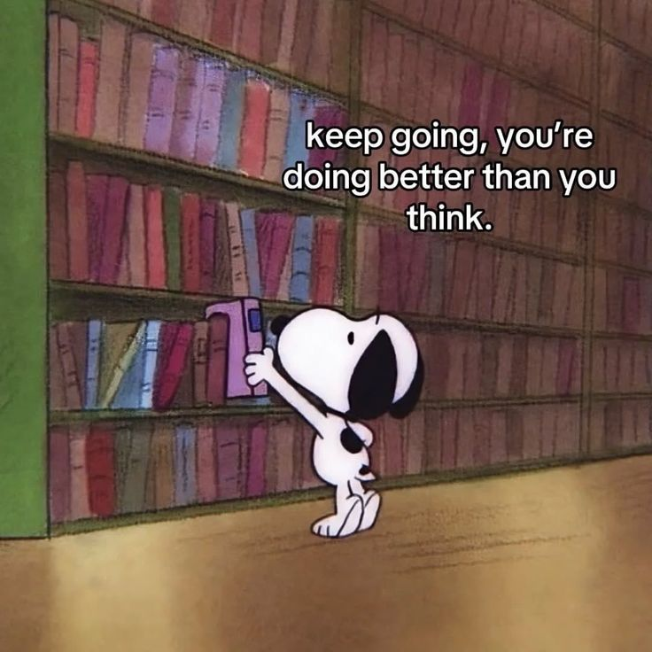
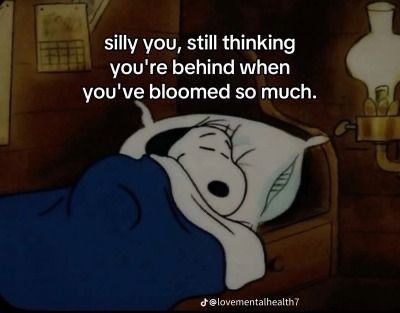
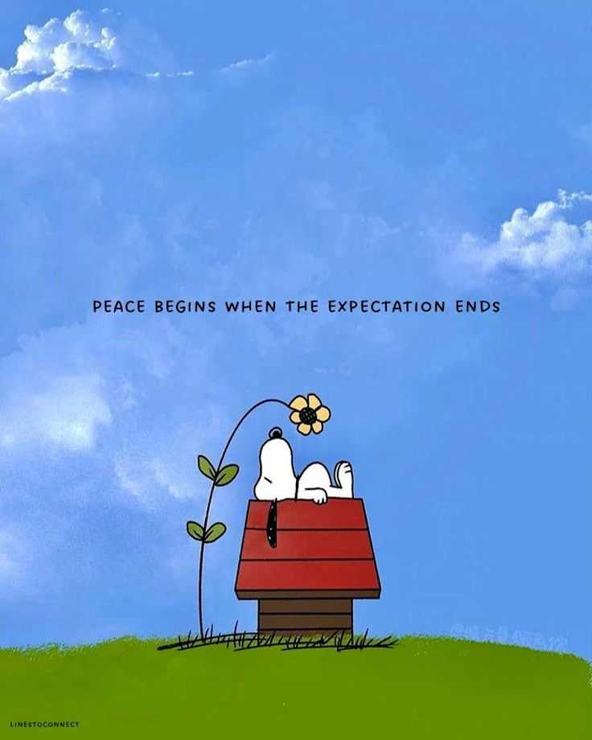
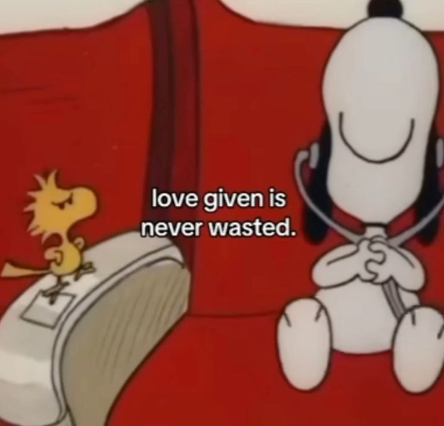
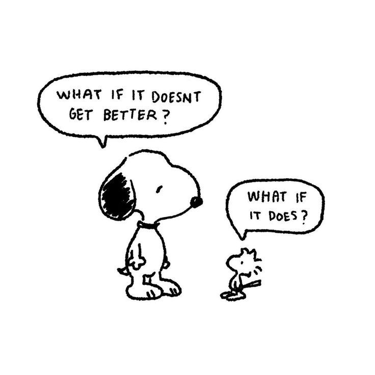
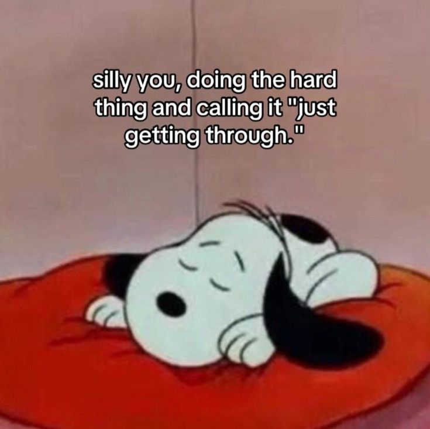
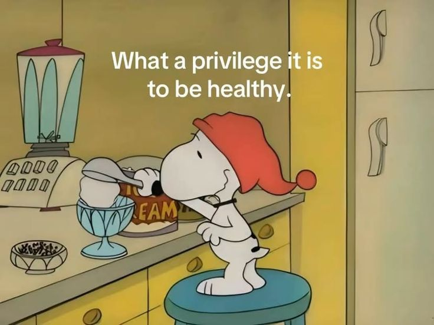
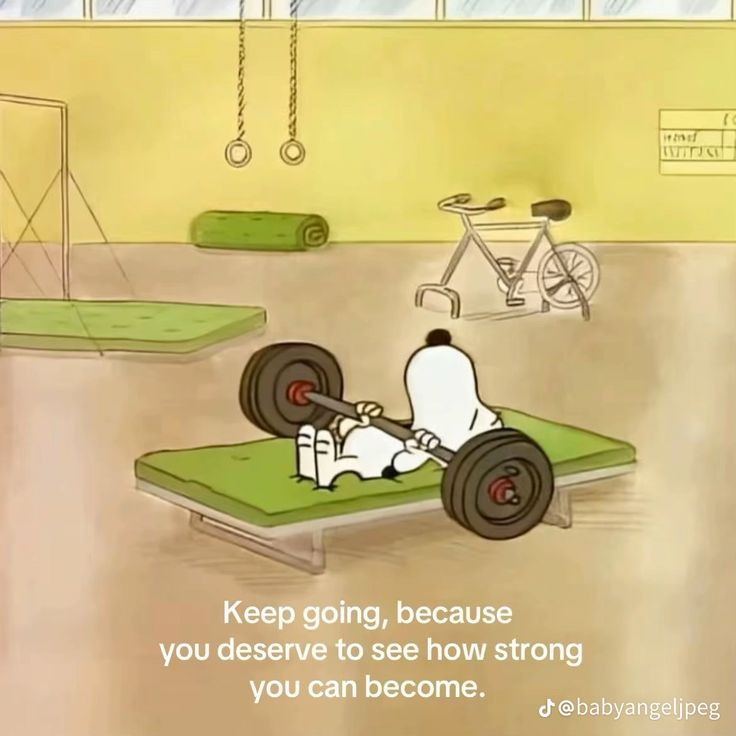

I find comfort in nostalgia. Some of my favorite forms of nostalgia are cute quotes with warm colorful photos in the background. Here I share some of my favorites so you can share the happy feeling I get when I find one.